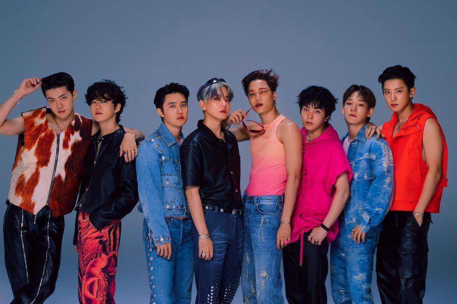

About EXO
EXO debuted in 2012 under SM Entertainment and became one of the most iconic K-pop groups of the decade. Known for powerful vocals, synchronized choreography, and concept-driven performances, EXO reshaped K-pop history.
With hits like "Growl," "Call Me Baby," and "Love Shot," EXO’s fandom, EXO-L, has remained one of the strongest communities in K-pop.
